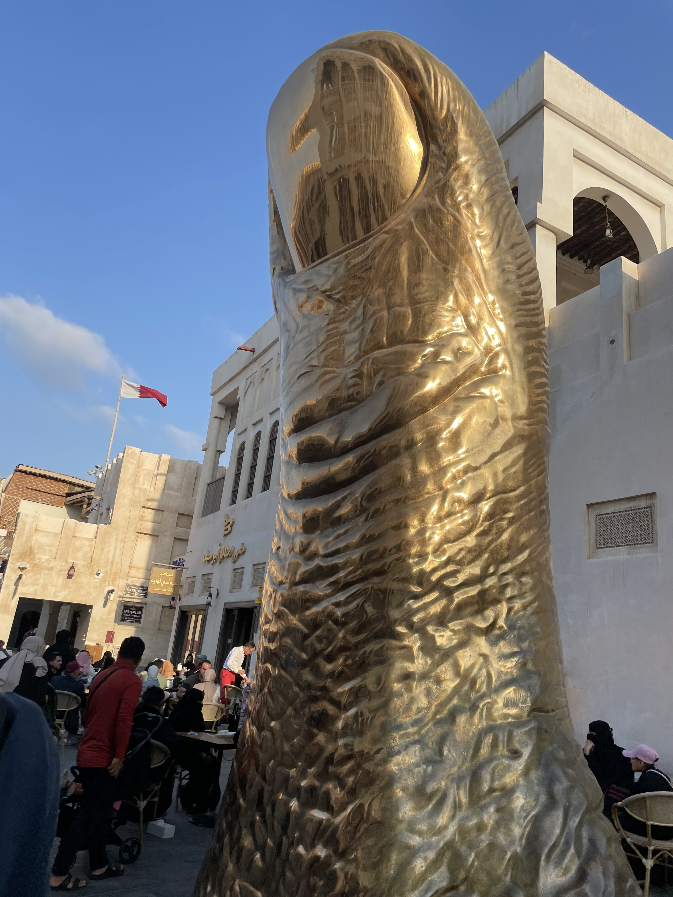
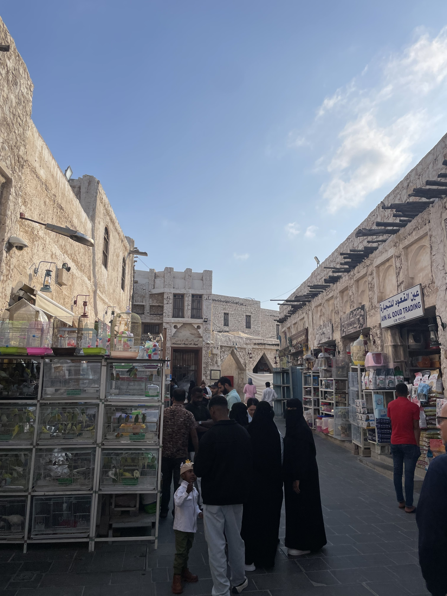

Marknader säljer ofta Djur som fåglar kyklingar och kaniner men de är inte för att äta utan de är deras husdjur.

En stor Guldig tumme står i mitten av marknaden. Eftersom den pekar upp så skulle man kunna säga att markander får en tumme upp.

Marknader har ofta många bänkar samlade på samma plats så att det är ett ställe för att ta det lungt och ett för att shoppa.

Marknader har ofta gamla bygnader eftersom de ger en speciell känsla som gör dessa marknader unika

köpcenter har Unika designer så att de alla är unika.